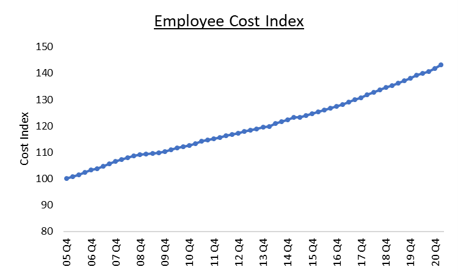
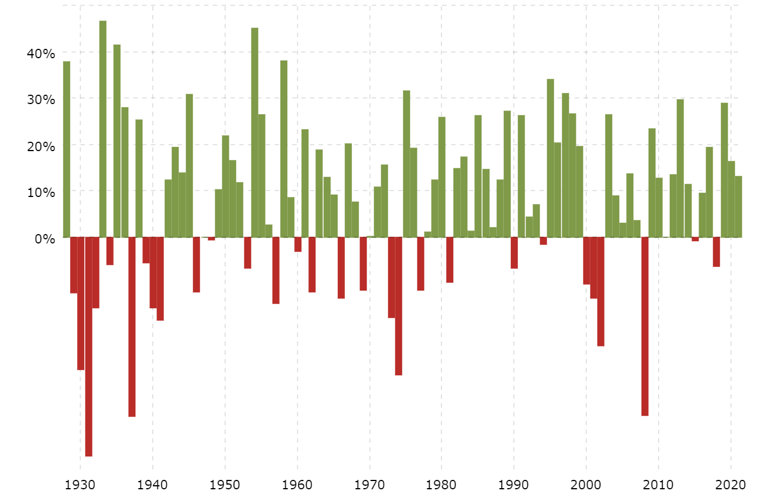
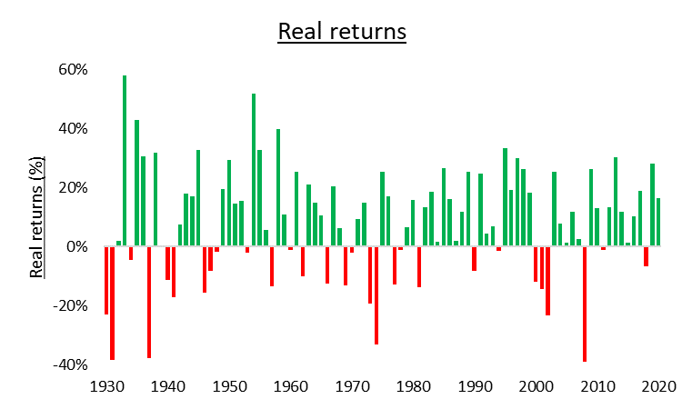

Will wage rises fuel inflation? And will the S&P continue to rise?
The former relates to my first post, which asks if inflation is likely to remain elevated. The latter is not so much a reasoned prediction, but meant to reassure savers - diversified index funds and regular contributions are all you need!
The wage-price spiral narrative is as follows: As inflation increases, workers expect higher inflation in the future. (They may also wish to earn higher wages to compensate for lower inflation-adjusted wages in the last quarter.) Thus they bargain for higher wages. They may wish to earn the same inflation-adjusted wages, or slightly more. This increases labour costs for firms, encouraging them to increase prices. But this causes higher inflation again, so wages adjusted for costs of living are lower than expected. And the process repeats.
Actually, I read that higher real wages increase disposal income, leading to higher consumer spending - thus encouraging firms to raise prices. But I prefer the former explanation, because it is not always clear that the best choice to -slightly- higher spending is to raise prices, rather than sell more units.
So I want to find evidence that this might or might not happen.
We are mostly interested in OECD countries and particularly the US, where these concerns are greatest. Let's have a look at wage inflation in the US:

It looks like wage growth has fallen since the COVID-induced recession. This measure does not suffer from 'composition
effects' - where lower paid workers lose their jobs, higher paid workers become a larger portion of employees, and
this drives up average wages. Instead, a sample of workers is surveyed at the start and end of 12 months, and the median
wage change for the whole sample is determined. Anyway, this fall suggests that we are not experiencing higher wage growth,
a necessary stage in a wage-price spiral.
(See this White House blog post
by Rouse and Gimbel on misleading wage growth)
There's also the Employee Cost Index (ECI), which is a measure of labour costs both in terms of pay and benefits such as healthcare, insurance, pension contributions etc. We only have data for 12-month changes ending March 2021, so we can't use it to decide whether wage inflation is out of control yet, but it's one to watch:
Now let's look at the UK:

It looks like wage growth is comparable to the years leading up to the Great Recession. However, due to composition effects, this may not represent changes in costs for the same workers. Also, it is preceded by negative wage growth, so we would expect higher wage growth at a lower wage level.
However, we are likely to experience a higher level of inflation for some time. We could test whether the geometric mean for CPI/PCE is higher over a five-year interval than before - but we'll need to wait four years! This is partly due to difficulties with finding skilled workers. According to the ONS, human capital - often defined as expected lifetime earnings - fell in 2017 and 2018, per person. If human capital has continued to fall or stagnate, the most skilled workers can demand much higher wages, raising labour costs. Firms substantially reduce investment in physical capital - machinery, computers etc. - during recessions, so it might take a few years until high skilled workers will be forced to moderate their demands. That's my theory anyway.
This paper by Motyovszki is fascinating, finding richer countries and countries with greater union co-ordination experience less wage growth. These considerations are important when considering whether stronger unions will contribute to higher wage inflation.
To end with some theorizing: In Anglophone countries especially, the numbers of employees in unions and the number of employees covered by union agreements has declined, suggesting we can reach an equilibrium with a lower NAIRU (non-accelerating-inflation rate of unemployment i.e. non-hyperinflationary). However, I expect, as wage inequality continues to rise, lower paid workers to demand higher wages, at the inevitable cost of higher unemployment. This means greater support for unions. However, since countries are much richer and unions more likely to co-ordinate than in the '70s, wage demands will be relatively low given the high level of union support. I won't guess at all on whether unions will be successful or will achieve very little, that is completely speculative!
Based on what I'd been hearing, I though the S&P never had better returns than during the pandemic. Here's the reality, courtesy of Macrotrends:
I used Excel data from Damodaran to make a chart showing real returns (adjusting for inflation):
Note that 2021 is included in the Macrotrends graph. Clearly neither 2020 or 2021 are exceptional years. And since the stock market returns are apparently unpredictable, it does not make sense to exit the market assuming there will be a massive crash. This paper by Alatiqi and Fazel, finds that there is no fixed relationship between money supply and interest rates, and between interest rates and stock prices. Thus, the peak of the stock market is not predicted by the Fed's frantic money printing. We cannot predict the new innovations which could send stocks soaring, or the new innovators.
Suppose the US faced a similar situation to Japan, with astonishing speculation in stocks followed by a crash, and then a stagnant stock market. The government would not tolerate this, and the Fed would probably sacrifice a bit of independence to try to reignite the stock market again, knowing that pensions and future livelihoods are at stake. At worst, the markets would stagnate for a decade or so. In any case, it would be better to make those fantastic returns now, rather than waiting for the market to crash when opportunities will be far more scarce. And that's assuming the worst!
So I recommend not getting caught up in stock market crash fear, sticking with what has worked, and staying away from anything speculative except to do econometrics. Well, that's all for now!